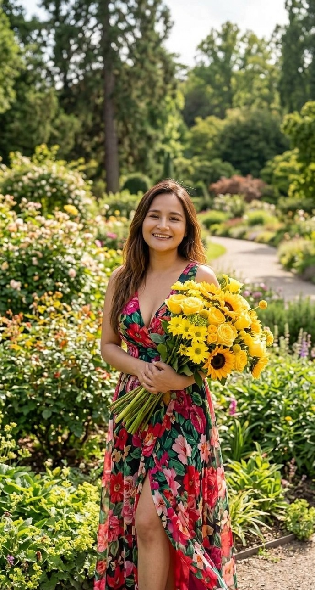
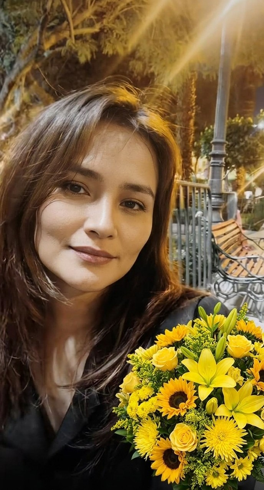
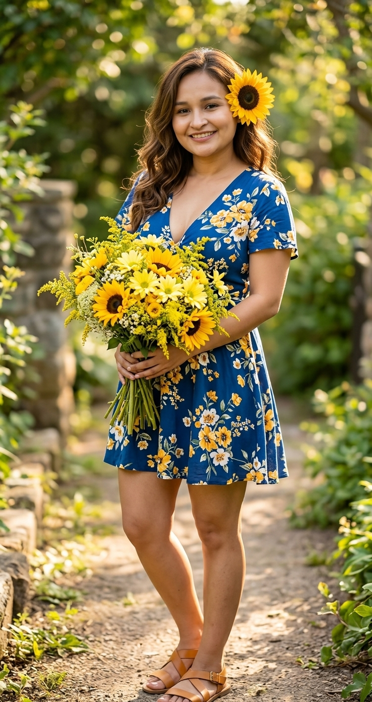
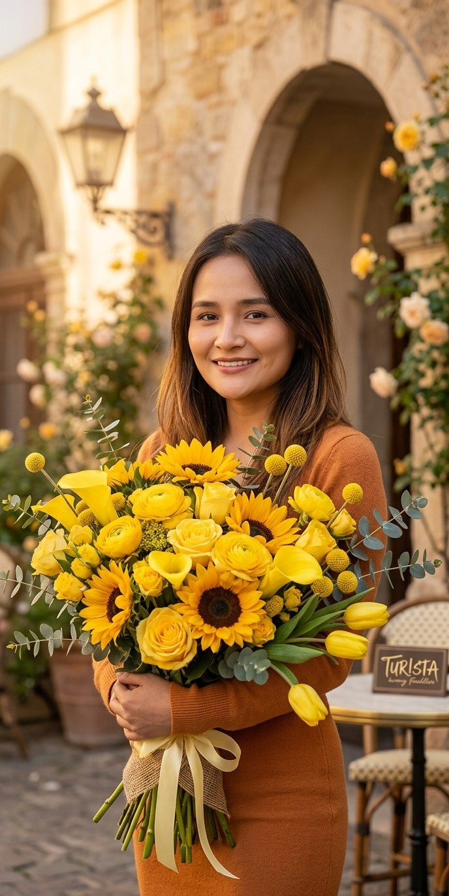

Hoy comienza una pequeña historia.
Hoy es un día de primavera, de nuevos comienzos, de cosas que vuelven a florecer.
Y pensé en regalarte flores...
pero las flores se marchitan.
21 · 09 · 2026
y otros que nacen para quedarse.
Las hice con Gemini y mi ia, hay una que quedo muy mal y no la inclui pero espero te gusten no tenia una biblioteca y tuve que improvisar con dos fotos tomadas de tiktok xd



Ahora sí...
te cuento por qué hice todo esto.Hoy es un día de primavera, de nuevos comienzos, de cosas que vuelven a florecer.
Y pensé en regalarte flores...
pero las flores se marchitan.
Así que hice una que no necesita agua, ni sol, ni tierra.
Solo necesita que algún día vuelvas a verla.
Hola, Nerilin...
Hoy quería darte algo diferente.
Podría haberte regalado flores, como probablemente haría cualquiera en un día como hoy, pero sentí que quería hacer algo un poquito más especial para ti.
Porque las flores son bonitas, pero tarde o temprano terminan marchitándose.
Y yo quería regalarte algo que pudiera quedarse.
Algo que, cuando lo vuelvas a ver, te recuerde que hubo alguien que quiso dedicar un pedacito de su tiempo para hacerte sonreír.

Los angeles si existen.Y sí, ya sabes que me gustas. No es precisamente un secreto que haya intentado guardar. xd
Pero más allá de eso, me gusta poder compartir momentos contigo, conocerte un poquito más cada día y simplemente tenerte cerca.
Así que esta pequeña flor es para ti.
No necesita agua, no se marchita y, mientras exista esta página, siempre podrá volver a florecer.
Feliz 21 de septiembre, Nerilin. ❤️
Que nunca te falten motivos para seguir creciendo.
Que nunca olvides que hay alguien aquí que te mira con muchísimo cariño.
Que nunca dejes de florecer, incluso en los días difíciles.
Que este nuevo año de tu vida te sorprenda de buenas maneras.